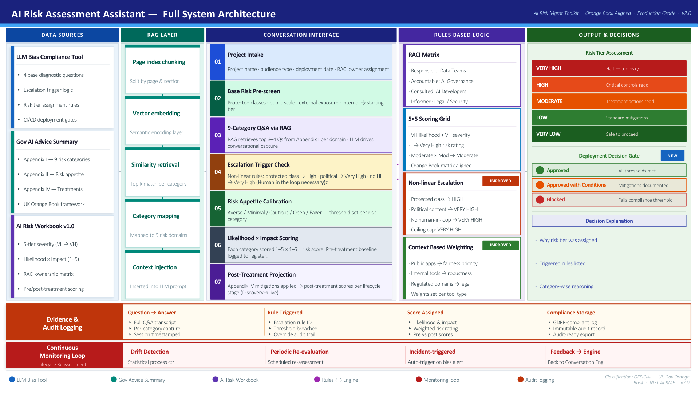

AI Risk Assessment
Enterprise Platform
A structured, governance-aligned platform for assessing, documenting, and managing AI-related risk across your organisation. Built on deterministic scoring, page-aware retrieval, and auditable decision logic.
As AI systems move from experimentation into production, organisations face a growing obligation to demonstrate that risk has been identified, scored, and mitigated before deployment. This platform provides two complementary tools to help governance, assurance, and development teams meet that obligation — consistently and at scale.
Two Tools, One Platform
The AI Risk Assessment platform delivers two purpose-built tools that work together to support end-to-end AI governance from framework enquiry through to scored risk output.
Page Index Chatbot
Intelligent, page-aware enquiry into the AI risk framework
The Page Index Chatbot enables teams to interrogate the AI risk assessment guide and related frameworks through natural language. Unlike generic RAG systems, it retrieves context at the page and section level — preserving document traceability and supporting accurate, citation-grounded responses.
Bias Detection Tool
Systematic bias assessment for AI solutions and outputs
The Bias Detection Tool provides developers and assurance teams with a structured method for identifying and scoring potential bias in AI systems. Using a deterministic rules engine and cross-referenced reference answers, it produces a scored, auditable bias assessment with risk tier classification.
What is Page Index?
Understanding how page-indexed retrieval differs from traditional vector-only search — and why it matters for structured policy and governance documents.
Page-Level Document Chunking
Rather than splitting documents into arbitrary semantic chunks, the Page Index approach preserves the original page and section boundaries of the source document. Each retrieval unit maps directly to a specific page or section, enabling precise citation and traceability back to the authoritative source.
Versus Traditional RAG
Standard vector-only RAG (Retrieval-Augmented Generation) retrieves the most semantically similar text chunks, but often loses page context and document structure. The Page Index preserves this structure, so responses remain anchored to verifiable pages — critical for governance and compliance use cases.
Structured AI Risk Documents
The AI risk assessment guide, Orange Book framework, and related appendices are structured documents where location matters. A reference to "Appendix I, page 14" carries institutional weight. Page-indexed retrieval preserves this meaning, supporting auditable and defensible AI risk decisions.
Guide Navigation & Traceability
Users can ask about specific risk categories, sections, or treatments and receive responses that cite the page source. This makes the chatbot a navigable, trustworthy interface to a complex multi-document framework — not just a generic question-answering layer.
System Components
The chatbot is composed of layered, enterprise-grade components spanning ingestion, retrieval, reasoning, and output.
Document Source
AI risk guide, Orange Book, Appendices I–IV, LLM Bias Compliance Tool documentation. Stored in Amazon S3.
Page Index Store
Documents are chunked by page and section. Each chunk is stored in Amazon DynamoDB with page number, section title, and source document metadata.
Query Orchestration & Retrieval
Incoming user queries are mapped against the page index. Top matching pages are retrieved based on section relevance and keyword matching. Supports optional semantic retrieval layer.
LLM Interaction Layer
Retrieved page context is injected into the LLM prompt. The LLM (Claude Haiku via AWS Bedrock) generates a grounded, page-cited response. LLM is Q&A only — no scoring.
Streamlit App Layer
Streamlit-based application interface. Renders the conversational UI, displays page citations, source references, and session history. Deployed as a Streamlit app — accessible via browser, no additional frontend framework required.
Reference & Scoring Output
Each response includes page number, section title, and document source. The response is grounded and auditable — designed to support governance review and compliance sign-off.
Tools & Technologies
The chatbot is built on a production-grade cloud-native stack, designed for enterprise deployment, security, and auditability.
Pipeline & Workflow
The following diagrams, extracted from the architecture decks, illustrate the end-to-end processing pipeline for both the Page Index Chatbot and the full AI Risk Assessment system.
How the pipeline works
Performance Metrics
The following metrics reflect the chatbot's expected performance targets and key evaluation dimensions. Values marked as demo are indicative targets, to be updated with live evaluation data.
Bias Detection & Assessment Tool
A structured, LLM-assisted tool for identifying, scoring, and reporting potential bias in AI systems — supporting governance, compliance, and assurance teams.
Purpose
The Bias Detection Tool provides developers and governance teams with a systematic method for assessing potential bias in an AI solution before deployment. Rather than relying on ad-hoc review, it follows a structured Q&A process, cross-references answers against pre-defined reference answers, and applies a deterministic scoring engine to classify bias risk.
This tool complements the Page Index Chatbot: where the chatbot helps teams understand what the framework requires, the Bias Detection Tool helps them demonstrate how their AI system meets or fails those requirements.
AI solution demonstrates strong alignment with reference answers across all bias dimensions. Standard documentation required. Safe to proceed to deployment review.
One or more bias dimensions show partial alignment. Mitigation actions required, documented, and reviewed before deployment. Conditions applied.
Critical bias dimensions fail the reference check. Deployment blocked until root causes are addressed, mitigations implemented, and re-assessment passed.
Value to Governance, Compliance & Assurance Teams
System Architecture Decks
The following diagrams are extracted directly from the architecture PowerPoint decks. Download the originals for full resolution and editing capability.
Illustrates the full processing pipeline across Ingestion & Auth, LLM & Retrieval, the Deterministic Boundary, Rules Engine, Output & Governance, and Monitoring & Audit layers. The DETERMINISTIC BOUNDARY enforces strict separation: all scoring, risk tier assignment, and compliance decisions are handled exclusively by deterministic Python code.

Shows the complete component map across Data Sources, RAG Layer, Conversation Interface, Rules-Based Logic, and Output & Decisions. Includes the 7-step assessment workflow from Project Intake through to Post-Treatment Projection, the 5×5 scoring grid, non-linear escalation rules, and evidence & audit logging. UK Gov Orange Book aligned, NIST AI RMF referenced, v2.0.
Presents the parallel deployment flows: the User Flow (PageIndex Chatbot — query through Streamlit App → Page Index Retriever → DynamoDB → Claude Haiku via Bedrock → Grounded Reply) and the Developer Flow (AI Assessment Tool — Streamlit App → DynamoDB → Bedrock → LLM Analyser → Scoring Engine → Risk Report), both backed by Amazon DynamoDB as the central data store.
Tools & Platform Summary
The complete technology stack used across the AI Risk Assessment platform, organised by capability layer.
Development Tools
- Python 3.x — backend orchestration and scoring engine
- Streamlit — application UI framework for both tools
- Visual Studio Code — primary IDE
- GitHub — version control and CI/CD pipelines
AI / LLM Tools
- AWS Bedrock — managed LLM service host (multi-model)
- Claude Haiku — conversational Q&A model via Bedrock
- LLM Analyser — answer cross-check and bias analysis
- Amazon Bedrock Guardrails — responsible AI controls
Hosting & Deployment
- AWS cloud infrastructure (EC2 / ECS / Lambda)
- AWS API Gateway — API management and auth
- GitHub Pages — static site hosting (this site)
- OAuth 2.0 + MFA — identity and access management
Document & Indexing
- Amazon DynamoDB — page index store and session logs
- Amazon S3 — source document archive
- Amazon OpenSearch Service — optional semantic retrieval layer
- AWS Secrets Manager — credentials and config management
Frontend Technologies
- Streamlit — Page Index Chatbot and Bias Detection Tool UI
- Streamlit Cloud / AWS — Streamlit app hosting
- HTML5 / CSS3 / JavaScript — this showcase website only
- GitHub Pages — public-facing documentation portal (this site)
Governance & Assessment
- UK Gov Orange Book framework — risk matrix alignment
- NIST AI RMF — risk management framework reference
- Deterministic Rules Engine — scoring and escalation
- Audit Logging — GDPR-compliant, immutable records
Project Assets
Download the original architecture decks and extracted slide previews for use in presentations, reviews, and governance documentation.
Full System Architecture
End-to-End Workflow and Full System Architecture — 2 slides, production grade, UK Gov Orange Book aligned, v2.0
Deployment Model & Workflow
User Flow (PageIndex Chatbot) and Developer Flow (AI Assessment Tool) — shared storage architecture, AWS deployment model
Slide Preview — Arch Slide 1
End-to-End Workflow — Risk Assessment Request Flow. High-resolution PNG exported from the architecture deck.
{kind=link}
Slide Preview — Arch Slide 2
Full System Architecture — AI Risk Assessment Assistant. Complete component map, v2.0.
{kind=link}
Slide Preview — Workflow Slide 1
Deployment Model — User Flow and Developer Flow. Shared Amazon DynamoDB data store.
{kind=link}
Project Write-Up
Full technical write-up — solution design, component rationale, assessment methodology, and governance alignment details.